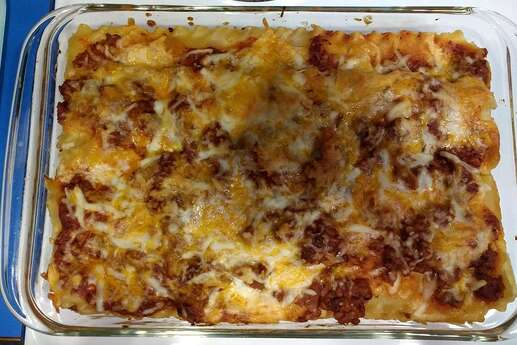

<-Back to menu
Lasagna

Description
Les lasagnes (lasagna, en italien) sont à la fois des pâtes alimentaires en forme de feuilles rectangulaires, ainsi qu'une recette de cuisine italienne à base de couches alternées de pâtes lasagnes, parmesan, mozzarella, ou ricotta, et de sauce bolognaise ou sauce béchamel, gratiné au four. Originaires du centre-sud italien, elles sont déclinées sous de multiples variantes dans le monde (légume, épinard, aubergine, pesto, viande, poisson, fruits de mer, ou végétariennes...)
Ingrédients
- 12 Feuilles de pâte à la lasagne pré-cuites
- 350g Viande de boeuf cuite(reste de pot au feu)
- 200g Gruiyère râpé
- 75cl lait
- 2 Boites de tomates concassées
- 2 Oignons
- 50g Beurre
- 4 cuil. à soupe Farine
- 3 cuil. à soupe Huile d'olive
- Noix de muscade râpée(un peu)
- Sel
- Poivre
Étapes
- Épluchez et hachez les oignons. Faites chauffer l’huile d’olive dans une casserole et faites revenir les oignons quelques min. Ajoutez ensuite les tomates concassées, du sel et du poivre. Puis ajoutez la viande. Faites réchauffer l'ensemble 10 min.
- Faites fondre le beurre dans une casserole. Ajoutez la farine, mélangez et laissez cuire 2 min. Versez le lait froid petit à petit tout en délayant à l'aide d'un fouet manuel. Salez, poivrez, ajoutez la noix de muscade et laissez cuire tout en remuant jusqu'à ce que la béchamel soit épaisse.
- Préchauffez le four à 200 °C.
- Déposez une couche de pâte à lasagne dans le fond d’un plat à gratin beurré. Versez par-dessus une couche de sauce à la viande de boeuf. Poursuivez par une couche de béchamel et une couche de gruyère râpé. Renouvelez l'opération 3 ou 4 fois en terminant par le gruyère.
- Enfournez environ 30 min.
Bon appétit!!